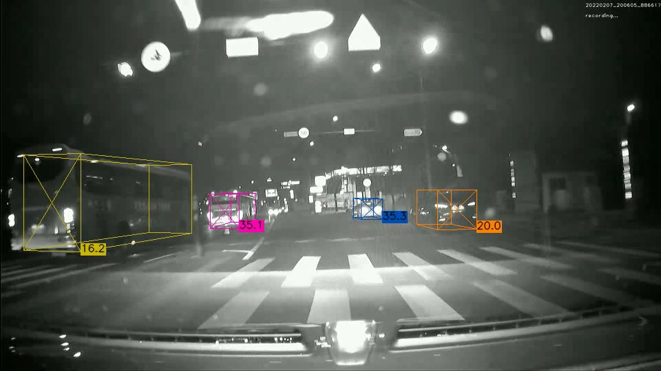

01 COMPUTER VISION
RGB·IR 영상 기반
3D 차량 검출·추적
- 문제
- IR 카메라 영상에서 3D 차량 검출과 추적을 하나의 시스템으로 구현해야 했습니다.
- 접근
- QD-3DT 검출부를 SMOKE로 교체하고, RGB·IR 데이터로 직접 학습·미세조정해 추적 모듈과 연동했습니다.
- 결과
- IR 입력부터 차량의 3D 검출·추적까지 연결한 시스템을 구현하고 동작을 확인했습니다.
전체 시스템 구성·개발 단독 담당
SMOKEQD-3DTRGB / IR
